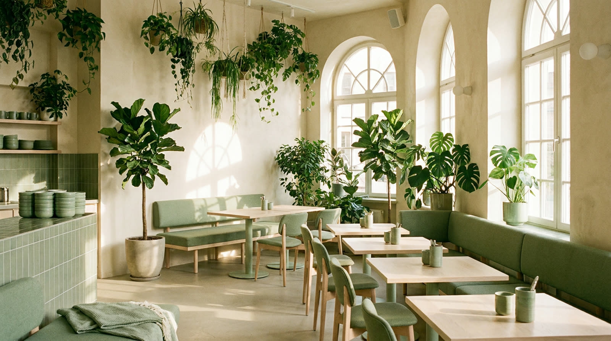
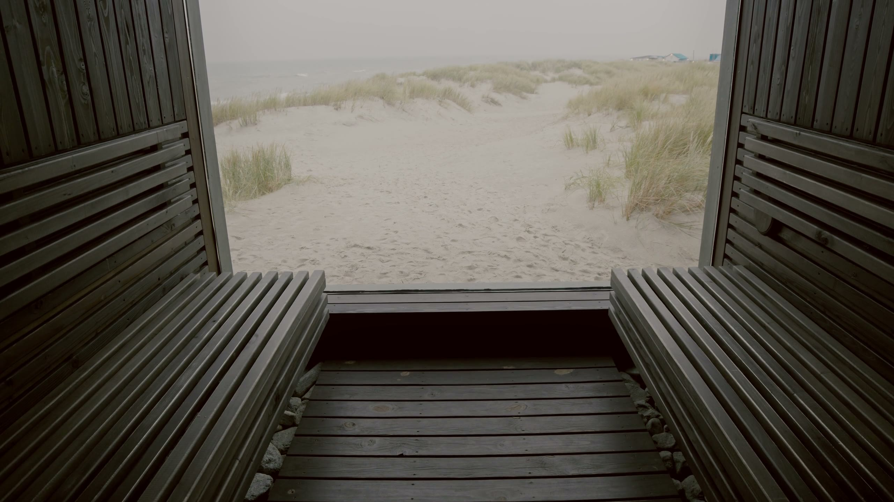
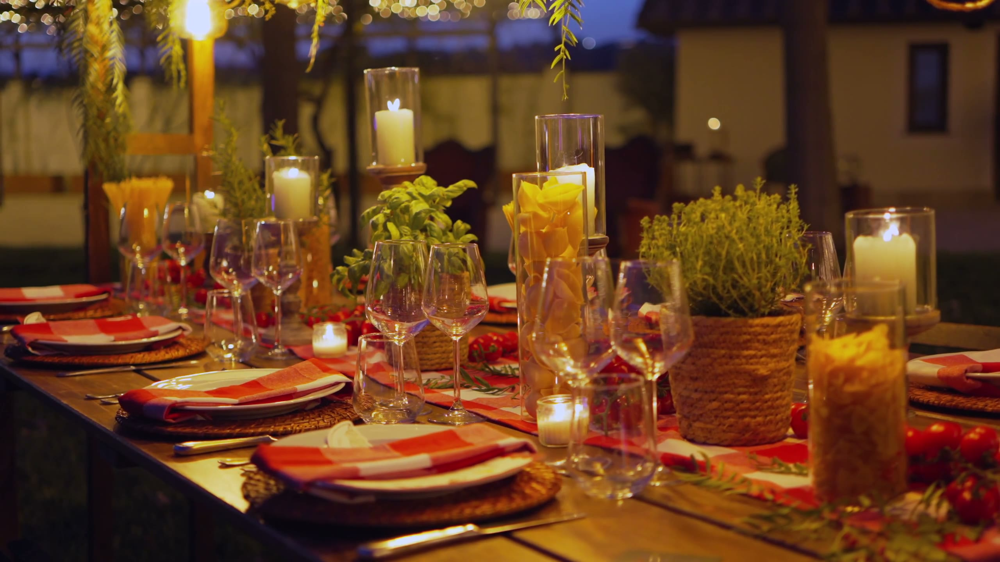
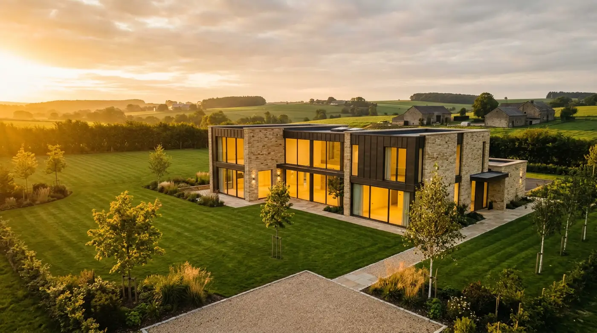
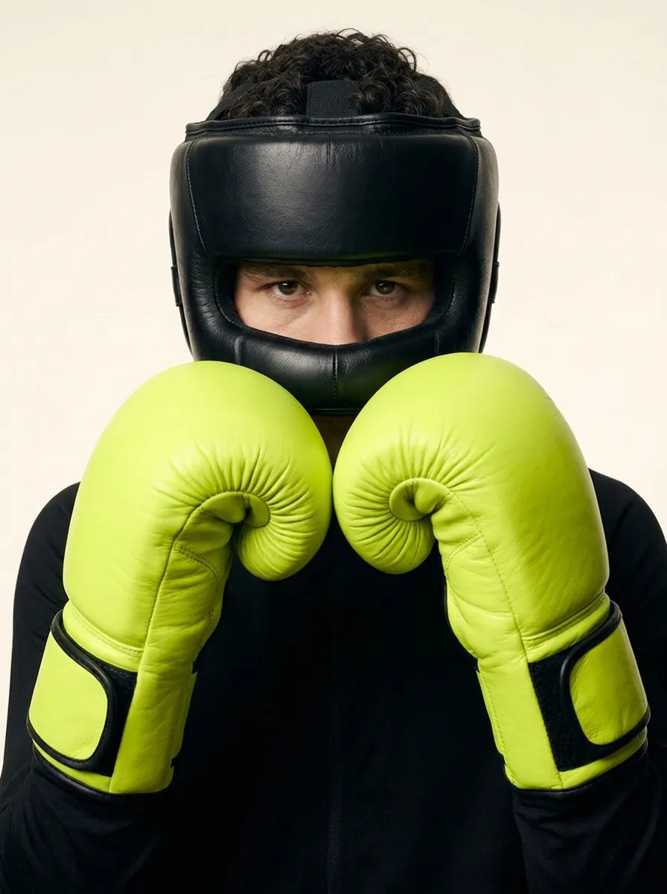

Verde.
Green cuisine · concept
Bold-organic archetypeThe bowl that opens — ingredients + kcal3D slider — the menuImmersive reveal of the place0 cookies · 0 trackers
[ Work ] — made to measure, yours to open

Health
GastronomyNot screenshots, not mockups: entire sites, online, that you can walk through right now. They were built for businesses we invented — which is exactly what lets us show everything, with nothing hidden behind an NDA.
[ 03 ] — worlds online · 0 templates
Demonstration worlds · invented businesses
[ 01 ] — The three worlds
Each thumbnail opens the full site in a new tab — animations, pages, forms. Nothing here is a still image.

Green cuisine · concept

Construction · since 1957

Athlete · portrait
These three houses do not exist. We are a young atelier, so we show no borrowed logos, no testimonials, no "trusted by". What you see here is our work, in full, yours to judge in one click — it is the only honest proof we can give you today.
[ 02 ] — The craft behind them
From a single page to a complete world — drawn to measure, never a template. Multilingual, cookie-free, with a real path for a visitor to become an inquiry.
Quoted after a conversation
[ example ]
[ 03 ] — Three atmospheres
Three atmospheres, one per trade — no client behind them, only the feeling a site can give before anything is explained.
03.1 · Real estate
A story of neighbourhoods.
Same-day response.
03.2 · Health
Light as care.
Book without a phone call.
03.3 · Gastronomy
Lume di candela.
The table is set.
YOUR-NAME · YOUR-CITY / 2026
A first glimpse of your world arrives in days, not months.
[ 04 ] — The atelier is its own client
01
Running
The one at the bottom right. It answers from our information only, hands off when it is unsure, and passes us the contact details of interested visitors. It is exactly what we install for you — try it, it is the product.
02
Running
The "Answer & Follow-up" system we offer runs first on our own inquiries: sorting, replying, following up. We do not sell a mechanism we do not use ourselves.
03
Running
Built from scratch, no template, no library, no page builder, no cookies or trackers. If you are wondering what we can do, you are already inside it.
[ 05 ] — And yours
We would rather let you judge the real thing than a promise: a first glimpse of your world arrives in days, not months, and every service starts with a free trial. If there is nothing useful for us to do for you, we will say so — it is cheaper for everyone.
← Back to all craftsScarsellato — digital atelier · Luxembourg · © 2026
0 cookies · 0 trackers
( ASSISTANT — LIVE )
Hello! I answer live, only from the atelier's own information — I never guess. Ask your question, or start with one of these:
Your messages are used only to answer you. 0 cookies, 0 trackers.